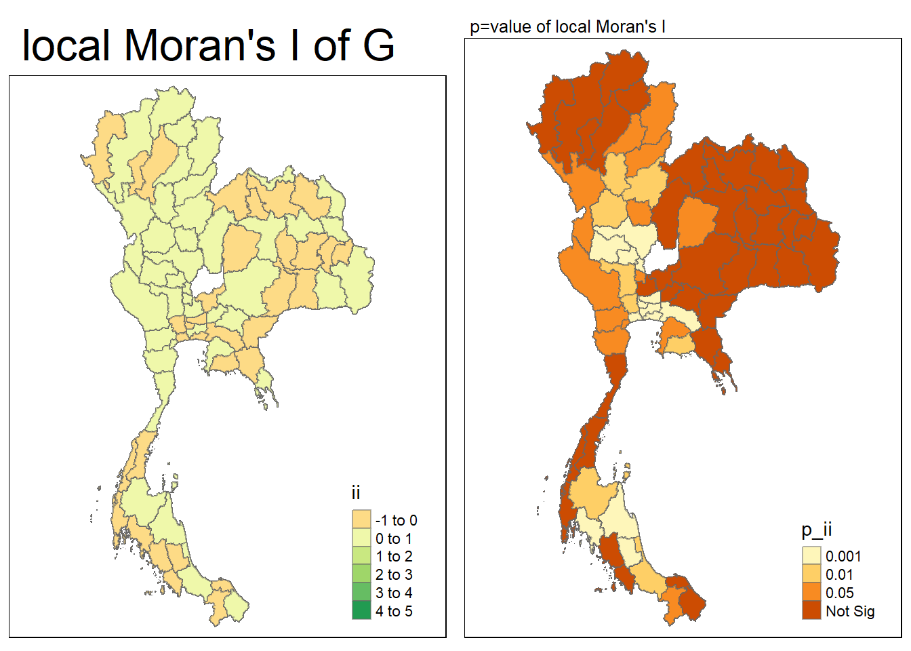

pacman::p_load(sf, spdep, tmap, tidyverse,sfdep)Take Home Exercise 2: Application of Geospatial Analysis Methods to Discover Thailand Drug Abuse at the Province Level
Background
1. Geopolitical Context
Thailand’s proximity to the Golden Triangle (the region where the borders of Thailand, Laos, and Myanmar meet) is significant as this area is historically known as a major hub for drug production and trafficking, particularly of opium and heroin. More recently, synthetic drugs like methamphetamine have become prevalent.
Thailand serves both as a transit route for drugs destined for third countries and as a significant market for illicit drugs. This geopolitical factor adds complexity to the issue, as it intersects with international drug trafficking networks and the nation’s domestic drug use.
2. Transportation Infrastructure
With the continuous development of transportation infrastructure in Thailand, the movement of drugs becomes easier both within the country and across borders. This infrastructure facilitates not only legitimate commerce but also illegal activities, particularly in regions that border drug-producing areas.
Analysts should consider transportation routes and connectivity between provinces, as these might correlate with higher rates of drug abuse or trafficking activity in certain regions.
3. Prevalence of Drug Use
Globally, drug use is on the rise, and Thailand reflects this trend. With 2.7 million youths reportedly using drugs, and 300,000 needing drug treatment, it’s clear that drug abuse is a pervasive social problem.
A particular focus should be placed on youth involvement, especially among vocational-school students, as they show a higher incidence of drug abuse compared to secondary-school students. Analysts may want to explore why this demographic is more vulnerable and how their environment (e.g., educational settings, social circles) contributes to the problem.
5. Geographic Distribution of Drug Use
By analyzing the geographic distribution of drug use cases across provinces, one can identify patterns that may suggest localized factors contributing to drug abuse. This may include proximity to trafficking routes, socio-economic disparities, or regional differences in enforcement or education.
Analysts should be prepared to look at this distribution in relation to population density, economic activity, access to healthcare, and law enforcement effectiveness. Yearly data will also allow for the identification of trends over time, such as regions where drug abuse is increasing or decreasing.
6. Policy and Enforcement
- Thailand has a strong anti-drug policy, including harsh penalties for drug-related offenses. However, the effectiveness of these policies is debatable given the continued rise in drug use. An analyst should consider the impact of these policies, including whether they have driven drug abuse underground or led to unintended consequences, such as higher incarceration rates.
In analyzing this data, it is crucial to contextualize it within regional geopolitics, infrastructure development, social factors, and government responses. Mapping drug abuse cases by year and province can help to uncover hotspots, trends, and areas where intervention may be most needed. Understanding the root causes of drug abuse among vulnerable populations, particularly youths, is also essential in crafting effective policy recommendations and targeted interventions.
Installing and loading R packages
sf: This package is used for handling spatial data in R, allowing for operations on simple features (geometric objects).
spdep: This package provides tools for spatial dependence, including functions for spatial weights and models.
tmap: A package designed for thematic mapping, making it easy to create static and interactive maps.
tidyverse: A collection of R packages designed for data science, including
ggplot2,dplyr, and others that simplify data manipulation and visualization.sfdep: This package focuses on spatial dependency, providing tools for estimating spatial autocorrelation and conducting related analyses.
The data
drug_data <- read.csv("data/thai_drug_offenses_2017_2022.csv")read a CSV (Comma-Separated Values) file containing data on drug offenses in Thailand from the years 2017 to 2022. Here’s a breakdown of its components and purpose:
summary(drug_data) fiscal_year types_of_drug_offenses no_cases province_th
Min. :2017 Length:7392 Min. : 0.0 Length:7392
1st Qu.:2018 Class :character 1st Qu.: 1.0 Class :character
Median :2020 Mode :character Median : 70.0 Mode :character
Mean :2020 Mean : 535.3
3rd Qu.:2021 3rd Qu.: 623.0
Max. :2022 Max. :17131.0
province_en
Length:7392
Class :character
Mode :character
Fiscal Year:
The
fiscal_yearvariable ranges from 2017 to 2022. This indicates that the dataset covers a total of 6 years of drug offense data.The median year is 2020, and the mean year is also 2020, suggesting that the data is centered around this time period.
Types of Drug Offenses:
The
types_of_drug_offensesvariable is categorical (character type) and contains a variety of different drug offenses.The distribution of types may be analyzed further to determine which types of offenses are most common over the years.
Number of Cases (
no_cases):The
no_casesvariable indicates the number of drug offense cases recorded in the dataset.Minimum: There are instances with 0 cases, indicating that in some provinces or years, no drug offenses were reported.
1st Quartile: The first quartile (25th percentile) shows that 25% of the cases had 1 or fewer offenses, indicating low numbers of cases in a substantial portion of the dataset.
Median: The median of 70 cases suggests that half of the entries reported 70 or fewer offenses, highlighting a significant number of cases in the upper half.
Mean: The average number of cases is 535.3, which is considerably higher than the median, suggesting that there are some provinces or years with exceptionally high numbers of cases that skew the average upwards.
3rd Quartile: The third quartile indicates that 75% of the cases reported 623 or fewer offenses, reflecting that a smaller portion of the dataset has a much larger number of offenses.
Maximum: The maximum number of cases reported is 17,131, which indicates a significant outlier. This could represent a specific province or year with particularly high drug offenses that may require further investigation.
Province:
The
province_envariable, also categorical, lists the provinces in which the drug offenses occurred. The length of this variable being 7392 indicates that there are multiple entries for different provinces and years.Analysis of this variable could reveal geographic patterns of drug offenses, helping identify regions that are more heavily impacted by drug issues.
Once the provincial boundaries are loaded into the thailand_provinces variable as a Simple Features (sf) object, it can be used for various analyse
thailand_provinces<- st_read(dsn="data/geospatial",
layer = "tha_admbnda_adm1_rtsd_20220121")Reading layer `tha_admbnda_adm1_rtsd_20220121' from data source
`C:\edwing444\IS415-GAA\Take_Home_Ex\Take_home_ex2\data\geospatial'
using driver `ESRI Shapefile'
Simple feature collection with 77 features and 16 fields
Geometry type: MULTIPOLYGON
Dimension: XY
Bounding box: xmin: 97.34336 ymin: 5.613038 xmax: 105.637 ymax: 20.46507
Geodetic CRS: WGS 84# Drop the ADM1_TH column
thailand_provinces <- thailand_provinces %>%
select(-ADM1_TH,-ADM1_REF,-ADM1ALT1EN,-ADM1ALT2EN,-ADM1ALT1TH,-ADM1ALT2EN, -ADM1ALT2TH, -ADM0_TH) %>%
rename(province_en = ADM1_EN)
# Drop the province_th column
drug_data <- drug_data %>%
select(-province_th)I simplify the thailand_provinces dataset by removing columns that are not needed for further analysis, thus making the dataset cleaner and more manageable. Also, i rename the ADM1_EN column to province_en, which contains the province names in English. This provides a clearer and more intuitive column name for future analysis.
Next, I remove the province_th column from the drug_data dataset, likely because it contains redundant or unnecessary information, especially if the thailand_provinces dataset now includes the relevant province information in English. Dropping this column helps streamline the drug_data dataset, focusing on the necessary columns that are crucial for the analysis of drug offenses.
province_grouped <- drug_data %>%
group_by(fiscal_year, province_en)
# Example: Summarize the total drug offenses for each group
province_summary <- province_grouped %>%
summarise(total_offenses = sum(no_cases, na.rm = TRUE), .groups = "keep")This grouping allows for subsequent calculations to be performed within these groups, making it easier to analyze trends and patterns of drug offenses over time and across different provinces.
The result after summarising is a new data frame province_summary that contains three columns: fiscal_year, province_en, and total_offenses, which reflects the total number of offenses recorded for each province in each fiscal year.
The argument .groups = "keep" retains the grouping structure of the original data frame in the summarized output, which may be useful for further analysis or visualizations.
# Join the drug abuse data with province polygons
combined_data <- thailand_provinces %>%
left_join(drug_data, by = "province_en")Now I will merge the two datasets in a way that retains all the rows from the thailand_provinces dataset and includes matching rows from the drug_data dataset based on the province_en column.
- If a province in
thailand_provincesdoes not have corresponding data indrug_data, the resultingcombined_datawill still include that province, but the columns fromdrug_datawill containNA(missing values).
The purpose of this operation is to create a combined dataset that integrates geographic information about the provinces with the corresponding drug offense data. This integration is used for mapping the data to understand how the data looks like
# Join the drug abuse province data with province polygons
combined_province_data <- thailand_provinces %>%
left_join(province_summary)Joining with `by = join_by(province_en)`The above merges the geographic data of provinces with the summarized drug offense data to create a comprehensive dataset that includes both spatial and analytical information.
The join is done based on the common columns present in both datasets. Since
province_summaryis assumed to have theprovince_encolumn, it will merge the summarized drug offense totals for each province.If there are provinces in
thailand_provincesthat do not have corresponding entries inprovince_summary, they will still be included in the resulting dataset (combined_province_data), but the columns fromprovince_summarywill containNA(missing values).
This integration is essential for spatial analysis and for visualizing the data on maps.
combined_province_data <- combined_province_data %>%
filter(!is.na(total_offenses))Now I clean the dataset by excluding any entries that do not have a valid total number of drug offenses.
Removing rows with NA values in the total_offenses column ensures that subsequent analyses or visualizations are based on complete data, leading to more accurate and reliable results.
print(st_geometry_type(combined_province_data)) [1] MULTIPOLYGON MULTIPOLYGON MULTIPOLYGON MULTIPOLYGON MULTIPOLYGON
[6] MULTIPOLYGON MULTIPOLYGON MULTIPOLYGON MULTIPOLYGON MULTIPOLYGON
[11] MULTIPOLYGON MULTIPOLYGON MULTIPOLYGON MULTIPOLYGON MULTIPOLYGON
[16] MULTIPOLYGON MULTIPOLYGON MULTIPOLYGON MULTIPOLYGON MULTIPOLYGON
[21] MULTIPOLYGON MULTIPOLYGON MULTIPOLYGON MULTIPOLYGON MULTIPOLYGON
[26] MULTIPOLYGON MULTIPOLYGON MULTIPOLYGON MULTIPOLYGON MULTIPOLYGON
[31] MULTIPOLYGON MULTIPOLYGON MULTIPOLYGON MULTIPOLYGON MULTIPOLYGON
[36] MULTIPOLYGON MULTIPOLYGON MULTIPOLYGON MULTIPOLYGON MULTIPOLYGON
[41] MULTIPOLYGON MULTIPOLYGON MULTIPOLYGON MULTIPOLYGON MULTIPOLYGON
[46] MULTIPOLYGON MULTIPOLYGON MULTIPOLYGON MULTIPOLYGON MULTIPOLYGON
[51] MULTIPOLYGON MULTIPOLYGON MULTIPOLYGON MULTIPOLYGON MULTIPOLYGON
[56] MULTIPOLYGON MULTIPOLYGON MULTIPOLYGON MULTIPOLYGON MULTIPOLYGON
[61] MULTIPOLYGON MULTIPOLYGON MULTIPOLYGON MULTIPOLYGON MULTIPOLYGON
[66] MULTIPOLYGON MULTIPOLYGON MULTIPOLYGON MULTIPOLYGON MULTIPOLYGON
[71] MULTIPOLYGON MULTIPOLYGON MULTIPOLYGON MULTIPOLYGON MULTIPOLYGON
[76] MULTIPOLYGON MULTIPOLYGON MULTIPOLYGON MULTIPOLYGON MULTIPOLYGON
[81] MULTIPOLYGON MULTIPOLYGON MULTIPOLYGON MULTIPOLYGON MULTIPOLYGON
[86] MULTIPOLYGON MULTIPOLYGON MULTIPOLYGON MULTIPOLYGON MULTIPOLYGON
[91] MULTIPOLYGON MULTIPOLYGON MULTIPOLYGON MULTIPOLYGON MULTIPOLYGON
[96] MULTIPOLYGON MULTIPOLYGON MULTIPOLYGON MULTIPOLYGON MULTIPOLYGON
[101] MULTIPOLYGON MULTIPOLYGON MULTIPOLYGON MULTIPOLYGON MULTIPOLYGON
[106] MULTIPOLYGON MULTIPOLYGON MULTIPOLYGON MULTIPOLYGON MULTIPOLYGON
[111] MULTIPOLYGON MULTIPOLYGON MULTIPOLYGON MULTIPOLYGON MULTIPOLYGON
[116] MULTIPOLYGON MULTIPOLYGON MULTIPOLYGON MULTIPOLYGON MULTIPOLYGON
[121] MULTIPOLYGON MULTIPOLYGON MULTIPOLYGON MULTIPOLYGON MULTIPOLYGON
[126] MULTIPOLYGON MULTIPOLYGON MULTIPOLYGON MULTIPOLYGON MULTIPOLYGON
[131] MULTIPOLYGON MULTIPOLYGON MULTIPOLYGON MULTIPOLYGON MULTIPOLYGON
[136] MULTIPOLYGON MULTIPOLYGON MULTIPOLYGON MULTIPOLYGON MULTIPOLYGON
[141] MULTIPOLYGON MULTIPOLYGON MULTIPOLYGON MULTIPOLYGON MULTIPOLYGON
[146] MULTIPOLYGON MULTIPOLYGON MULTIPOLYGON MULTIPOLYGON MULTIPOLYGON
[151] MULTIPOLYGON MULTIPOLYGON MULTIPOLYGON MULTIPOLYGON MULTIPOLYGON
[156] MULTIPOLYGON MULTIPOLYGON MULTIPOLYGON MULTIPOLYGON MULTIPOLYGON
[161] MULTIPOLYGON MULTIPOLYGON MULTIPOLYGON MULTIPOLYGON MULTIPOLYGON
[166] MULTIPOLYGON MULTIPOLYGON MULTIPOLYGON MULTIPOLYGON MULTIPOLYGON
[171] MULTIPOLYGON MULTIPOLYGON MULTIPOLYGON MULTIPOLYGON MULTIPOLYGON
[176] MULTIPOLYGON MULTIPOLYGON MULTIPOLYGON MULTIPOLYGON MULTIPOLYGON
[181] MULTIPOLYGON MULTIPOLYGON MULTIPOLYGON MULTIPOLYGON MULTIPOLYGON
[186] MULTIPOLYGON MULTIPOLYGON MULTIPOLYGON MULTIPOLYGON MULTIPOLYGON
[191] MULTIPOLYGON MULTIPOLYGON MULTIPOLYGON MULTIPOLYGON MULTIPOLYGON
[196] MULTIPOLYGON MULTIPOLYGON MULTIPOLYGON MULTIPOLYGON MULTIPOLYGON
[201] MULTIPOLYGON MULTIPOLYGON MULTIPOLYGON MULTIPOLYGON MULTIPOLYGON
[206] MULTIPOLYGON MULTIPOLYGON MULTIPOLYGON MULTIPOLYGON MULTIPOLYGON
[211] MULTIPOLYGON MULTIPOLYGON MULTIPOLYGON MULTIPOLYGON MULTIPOLYGON
[216] MULTIPOLYGON MULTIPOLYGON MULTIPOLYGON MULTIPOLYGON MULTIPOLYGON
[221] MULTIPOLYGON MULTIPOLYGON MULTIPOLYGON MULTIPOLYGON MULTIPOLYGON
[226] MULTIPOLYGON MULTIPOLYGON MULTIPOLYGON MULTIPOLYGON MULTIPOLYGON
[231] MULTIPOLYGON MULTIPOLYGON MULTIPOLYGON MULTIPOLYGON MULTIPOLYGON
[236] MULTIPOLYGON MULTIPOLYGON MULTIPOLYGON MULTIPOLYGON MULTIPOLYGON
[241] MULTIPOLYGON MULTIPOLYGON MULTIPOLYGON MULTIPOLYGON MULTIPOLYGON
[246] MULTIPOLYGON MULTIPOLYGON MULTIPOLYGON MULTIPOLYGON MULTIPOLYGON
[251] MULTIPOLYGON MULTIPOLYGON MULTIPOLYGON MULTIPOLYGON MULTIPOLYGON
[256] MULTIPOLYGON MULTIPOLYGON MULTIPOLYGON MULTIPOLYGON MULTIPOLYGON
[261] MULTIPOLYGON MULTIPOLYGON MULTIPOLYGON MULTIPOLYGON MULTIPOLYGON
[266] MULTIPOLYGON MULTIPOLYGON MULTIPOLYGON MULTIPOLYGON MULTIPOLYGON
[271] MULTIPOLYGON MULTIPOLYGON MULTIPOLYGON MULTIPOLYGON MULTIPOLYGON
[276] MULTIPOLYGON MULTIPOLYGON MULTIPOLYGON MULTIPOLYGON MULTIPOLYGON
[281] MULTIPOLYGON MULTIPOLYGON MULTIPOLYGON MULTIPOLYGON MULTIPOLYGON
[286] MULTIPOLYGON MULTIPOLYGON MULTIPOLYGON MULTIPOLYGON MULTIPOLYGON
[291] MULTIPOLYGON MULTIPOLYGON MULTIPOLYGON MULTIPOLYGON MULTIPOLYGON
[296] MULTIPOLYGON MULTIPOLYGON MULTIPOLYGON MULTIPOLYGON MULTIPOLYGON
[301] MULTIPOLYGON MULTIPOLYGON MULTIPOLYGON MULTIPOLYGON MULTIPOLYGON
[306] MULTIPOLYGON MULTIPOLYGON MULTIPOLYGON MULTIPOLYGON MULTIPOLYGON
[311] MULTIPOLYGON MULTIPOLYGON MULTIPOLYGON MULTIPOLYGON MULTIPOLYGON
[316] MULTIPOLYGON MULTIPOLYGON MULTIPOLYGON MULTIPOLYGON MULTIPOLYGON
[321] MULTIPOLYGON MULTIPOLYGON MULTIPOLYGON MULTIPOLYGON MULTIPOLYGON
[326] MULTIPOLYGON MULTIPOLYGON MULTIPOLYGON MULTIPOLYGON MULTIPOLYGON
[331] MULTIPOLYGON MULTIPOLYGON MULTIPOLYGON MULTIPOLYGON MULTIPOLYGON
[336] MULTIPOLYGON MULTIPOLYGON MULTIPOLYGON MULTIPOLYGON MULTIPOLYGON
[341] MULTIPOLYGON MULTIPOLYGON MULTIPOLYGON MULTIPOLYGON MULTIPOLYGON
[346] MULTIPOLYGON MULTIPOLYGON MULTIPOLYGON MULTIPOLYGON MULTIPOLYGON
[351] MULTIPOLYGON MULTIPOLYGON MULTIPOLYGON MULTIPOLYGON MULTIPOLYGON
[356] MULTIPOLYGON MULTIPOLYGON MULTIPOLYGON MULTIPOLYGON MULTIPOLYGON
[361] MULTIPOLYGON MULTIPOLYGON MULTIPOLYGON MULTIPOLYGON MULTIPOLYGON
[366] MULTIPOLYGON MULTIPOLYGON MULTIPOLYGON MULTIPOLYGON MULTIPOLYGON
[371] MULTIPOLYGON MULTIPOLYGON MULTIPOLYGON MULTIPOLYGON MULTIPOLYGON
[376] MULTIPOLYGON MULTIPOLYGON MULTIPOLYGON MULTIPOLYGON MULTIPOLYGON
[381] MULTIPOLYGON MULTIPOLYGON MULTIPOLYGON MULTIPOLYGON MULTIPOLYGON
[386] MULTIPOLYGON MULTIPOLYGON MULTIPOLYGON MULTIPOLYGON MULTIPOLYGON
[391] MULTIPOLYGON MULTIPOLYGON MULTIPOLYGON MULTIPOLYGON MULTIPOLYGON
[396] MULTIPOLYGON MULTIPOLYGON MULTIPOLYGON MULTIPOLYGON MULTIPOLYGON
[401] MULTIPOLYGON MULTIPOLYGON MULTIPOLYGON MULTIPOLYGON MULTIPOLYGON
[406] MULTIPOLYGON MULTIPOLYGON MULTIPOLYGON MULTIPOLYGON MULTIPOLYGON
[411] MULTIPOLYGON MULTIPOLYGON MULTIPOLYGON MULTIPOLYGON MULTIPOLYGON
[416] MULTIPOLYGON MULTIPOLYGON MULTIPOLYGON MULTIPOLYGON MULTIPOLYGON
[421] MULTIPOLYGON MULTIPOLYGON MULTIPOLYGON MULTIPOLYGON MULTIPOLYGON
[426] MULTIPOLYGON MULTIPOLYGON MULTIPOLYGON MULTIPOLYGON MULTIPOLYGON
[431] MULTIPOLYGON MULTIPOLYGON MULTIPOLYGON MULTIPOLYGON MULTIPOLYGON
[436] MULTIPOLYGON MULTIPOLYGON MULTIPOLYGON MULTIPOLYGON MULTIPOLYGON
[441] MULTIPOLYGON MULTIPOLYGON MULTIPOLYGON MULTIPOLYGON MULTIPOLYGON
[446] MULTIPOLYGON MULTIPOLYGON MULTIPOLYGON MULTIPOLYGON MULTIPOLYGON
18 Levels: GEOMETRY POINT LINESTRING POLYGON MULTIPOINT ... TRIANGLEIt is “MULTIPOLYGON”, it signifies that some provinces may consist of multiple, non-contiguous areas.
Understanding the data
# Create a choropleth map using tmap
tm_shape(combined_province_data) +
tm_polygons("total_offenses",
title = "Number of Cases",
palette = "Blues",
style = "quantile",
n = 5) +
tm_facets(by = "fiscal_year", nrow = 2, free.coords = FALSE) +
tm_layout(main.title = "Drug Offense Cases in Thailand by Province and Fiscal Year",
main.title.size = 1.5,
legend.outside = TRUE)Key Observations:
Spatial Distribution:
Northern Thailand: Consistently shows higher rates of drug offenses throughout the depicted years.
Southern Thailand: Exhibits a mix of high and low rates, with some provinces experiencing significant spikes in certain years.
Central Thailand: Generally has lower rates compared to the north and south, though there are fluctuations.
Temporal Trends:
2017-2019: A general increase in drug offense cases is observed across most provinces.
2020: A slight decrease is seen in some regions, potentially due to COVID-19 restrictions or other factors.
2021-2022: Data is missing for 2022, making a complete analysis difficult. However, 2021 shows a continuation of trends from previous years.
Hotspots:
Northern Provinces: Chiang Mai, Chiang Rai, and Mae Hong Son consistently appear as hotspots with high levels of drug offenses.
Southern Provinces: Provinces like Yala, Pattani, and Narathiwat often show elevated rates, particularly in certain years.
Potential Explanations and Further Analysis:
Geographical Factors: Proximity to borders with neighboring countries, especially Myanmar and Laos, could influence drug trafficking routes and hence, higher rates of offenses.
Socioeconomic Conditions: Poverty, unemployment, and lack of educational opportunities might be contributing factors in regions with high rates.
Governance and Law Enforcement: The effectiveness of law enforcement agencies and anti-drug initiatives could vary across different regions.
Drug Production and Trafficking: Understanding the specific types of drugs involved and their production/trafficking routes could provide valuable insights.
# Example: KDE (if you have point data)
tm_shape(combined_province_data) +
tm_polygons("total_offenses",
title = "Number of Drug Cases",
palette = "Oranges",
style = "cont") + # Continuous color scale
tm_layout(main.title = "KDE Map of Drug Offense Density",
legend.outside = TRUE)Key Observations:
Spatial Clustering:
Northern Thailand: Exhibits the highest density of drug offenses, with clusters forming in regions like Chiang Mai, Chiang Rai, and Mae Hong Son.
Southern Thailand: Also shows significant clustering, particularly in the provinces of Yala, Pattani, and Narathiwat.
Central Thailand: Generally has lower densities, with scattered clusters in some areas.
Density Gradients:
The map clearly illustrates gradients in drug offense density, with darker shades indicating higher concentrations and lighter shades representing lower concentrations.
These gradients provide a visual representation of the spatial distribution of drug offenses across the country.
Potential Explanations and Further Analysis:
Geographical Factors: Proximity to borders with neighboring countries, such as Myanmar and Laos, could influence drug trafficking routes and contribute to higher densities in those regions.
Socioeconomic Conditions: Poverty, unemployment, and lack of educational opportunities might be correlated with higher drug offense rates.
Governance and Law Enforcement: The effectiveness of law enforcement agencies and anti-drug initiatives could vary across different regions, impacting the density of drug offenses.
Drug Production and Trafficking: Understanding the specific types of drugs involved and their production/trafficking routes could provide valuable insights into the spatial patterns.
Preparing data for Global Measures of Spatial Autocorrelation
#|eval: false
# Create neighbors list
neighbors <- st_contiguity(combined_province_data)I create a contiguity-based neighbors list for spatial analysis
st_contiguity() is part of the sfdep package, which is designed for working with spatial dependencies.
Contiguity refers to spatial units (in this case, provinces) that share common boundaries. When two provinces share a border, they are considered “neighbors.”
The function creates a list of neighboring provinces based on their shared borders.
The result is a list where each province has an associated set of neighboring provinces.
Save Derived data
write_rds(neighbors,"data/rds/neighbors.rds")Read Derived data
neighbors<-read_rds("data/rds/neighbors.rds")length(combined_province_data$total_offenses) # Check the length of your data[1] 450length(neighbors) # Check the number of units in the spatial weights matrix[1] 450listw <- nb2listw(neighbors)Now we convert a neighbors list (such as the one I created earlier with st_contiguity()) into a spatial weights matrix (stored as listw). This is an important step in spatial analysis because it allows me to quantify the relationships between geographic units (in this case, provinces) in terms of spatial dependence.
# Convert neighbors list to weights list
weights_list <- nb2listw(neighbors, style = "W")This command converts the neighbors list into a spatial weights matrix (stored as weights_list), where the weights are row-standardized. The weights matrix is used for spatial analysis tasks like calculating spatial autocorrelation or running spatial regression models.
Calculating Moran’s I
# Calculate Moran's I
moran_result <- moran.test(combined_province_data$total_offenses, listw)
print(moran_result)
Moran I test under randomisation
data: combined_province_data$total_offenses
weights: listw
Moran I statistic standard deviate = 16.077, p-value < 2.2e-16
alternative hypothesis: greater
sample estimates:
Moran I statistic Expectation Variance
0.1903562142 -0.0022271715 0.0001434901 Moran’s I is a measure of spatial autocorrelation, which indicates whether values of a variable at nearby locations are more similar or more different than expected by chance. It ranges from -1 to 1
Output Interpretation:
Moran I statistic: 0.1903562142 - This value suggests a weak positive spatial autocorrelation. It means that provinces with higher rates of total offenses tend to be located near other provinces with higher rates.
Standard deviate: 16.077 - This is the standard deviation of the Moran’s I statistic under random permutations. It provides a measure of variability around the expected value of 0 under no autocorrelation.
p-value: < 2.2e-16 - This extremely small p-value indicates that the observed Moran’s I statistic is highly unlikely to occur by chance if there were no spatial autocorrelation. It provides strong evidence for the existence of spatial clustering in the data.
Expectation and Variance: These values represent the expected value and variance of the Moran’s I statistic under random permutations. They are used to assess the significance of the observed statistic.
Conclusion:
The analysis suggests that there is a weak positive spatial autocorrelation in the distribution of total offenses across the provinces in the dataset. This means that provinces with higher rates of total offenses tend to be clustered together geographically. This finding may be indicative of underlying spatial processes or factors that influence the distribution of total offenses
Global measures of Spatial Association
#|eval: false
wm_thai_g <- combined_province_data %>%
mutate(nb=st_contiguity(geometry),
wt=st_weights(nb,
style="W"),
.before = 1)Save Derived data
write_rds(wm_thai_g,"data/rds/wm_thai_g.rds")Read Derived data
wm_thai_g<-read_rds("data/rds/wm_thai_g.rds")Computing Global Moran’I
global_moran() function is used to compute Moran’s I value. Different from sdep package, the output is a tibble data.frame
moranI <- global_moran(wm_thai_g$total_offenses,
wm_thai_g$nb,
wm_thai_g$wt)
glimpse(moranI)List of 2
$ I: num 0.19
$ K: num 21.8Output Interpretation:
$ I: num 0.19: This indicates that the calculated Global Moran’s I statistic is 0.19. This suggests a weak positive spatial autocorrelation, meaning that provinces with higher rates of total offenses tend to be clustered together geographically.
$ K: num 21.8: This is the Z-score associated with the Moran’s I statistic. It provides a standardized measure of the significance of the observed spatial autocorrelation. A Z-score of 21.8 is generally considered to be statistically significant, suggesting that the observed spatial clustering is unlikely to occur by chance.
Conclusion:
The analysis suggests that there is a weak positive spatial autocorrelation in the distribution of total offenses across the provinces in the dataset. This means that provinces with higher rates of total offenses tend to be clustered together geographically. This finding may be indicative of underlying spatial processes or factors that influence the distribution of total offenses.
Performing Global Moran’s I test
global_moran_test(wm_thai_g$total_offenses,
wm_thai_g$nb,
wm_thai_g$wt)
Moran I test under randomisation
data: x
weights: listw
Moran I statistic standard deviate = 16.077, p-value < 2.2e-16
alternative hypothesis: greater
sample estimates:
Moran I statistic Expectation Variance
0.1903562142 -0.0022271715 0.0001434901 global_moran_perm(wm_thai_g$total_offenses,
wm_thai_g$nb,
wm_thai_g$wt,
nsim = 99)
Monte-Carlo simulation of Moran I
data: x
weights: listw
number of simulations + 1: 100
statistic = 0.19036, observed rank = 100, p-value < 2.2e-16
alternative hypothesis: two.sidedOutput Interpretation:
p-value:
The p-value is < 2.2e-16, which is extremely small.
This very low p-value suggests that the observed spatial autocorrelation is statistically significant. We can reject the null hypothesis that there is no spatial autocorrelation.
Interpretation of the Hypothesis Test:
The alternative hypothesis is greater, meaning the test is checking whether there is significant positive spatial autocorrelation.
Since the Moran’s I value is positive and the p-value is extremely low, there is significant evidence to conclude that positive spatial autocorrelation exists in the drug offense data.
Moran I statistic: 0.1903562142 - This indicates that the calculated Global Moran’s I statistic is 0.19. This suggests a weak positive spatial autocorrelation, meaning that provinces with higher rates of total offenses tend to be clustered together geographically.
Standard deviate: 16.077 - This is the standard deviation of the Moran’s I statistic under random permutations. It provides a measure of variability around the expected value of 0 under no autocorrelation.
Sample estimates:
Expectation: -0.0022271715 - This is the expected value of the Moran’s I statistic under random permutations.
Variance: 0.0001434901 - This is the variance of the Moran’s I statistic under random permutations.
Conclusion
The test results suggest that drug offenses in Thailand are spatially clustered rather than randomly dispersed. There is a moderate level of clustering of similar values (provinces with similar levels of offenses are located near each other), and this result is statistically significant.
Local Moran’s I (LISA) calculation
# Local Moran's I (LISA) calculation
local_moran <- localmoran(combined_province_data$total_offenses, listw)
head(local_moran) Ii E.Ii Var.Ii Z.Ii Pr(z != E(Ii))
1 3.915244 -0.0980888574 0.884289023 4.267839 1.973754e-05
2 4.433758 -0.1405926984 1.207737668 4.162394 3.149282e-05
3 4.036029 -0.1067510040 0.953136961 4.243403 2.201559e-05
4 2.934944 -0.0468413687 0.446278092 4.463480 8.063904e-06
5 2.449271 -0.0305306590 0.295856466 4.559071 5.138033e-06
6 0.363538 -0.0005377416 0.005372184 4.967253 6.790805e-07Interpretation of Results:
Ii values: Positive values indicate clustering of similar values (hotspots or coldspots), while negative values indicate dispersion of dissimilar values.
Z.Ii and Pr(z != E(Ii)): High Z-scores and low p-values suggest statistically significant clustering or dispersion.
Visualisng Local Moran’s I (LISA)
# Local Moran's I (LISA) calculation
lisa <- localmoran(combined_province_data$total_offenses, listw = weights_list)
combined_province_data$lisa <- lisa[, "Ii"] # Set tmap mode to interactive or static
tmap_mode("plot") # Use "view" for interactivetmap mode set to plotting# Create a thematic map to visualize Local Moran's I
tm_shape(combined_province_data) +
tm_polygons("lisa", palette = "viridis", title = "Local Moran's I (LISA)") +
tm_layout(title = "Local Moran's I (LISA) for Drug Abuse in Thailand Provinces")Key Observations:
Spatial Clustering:
Northern Thailand: Exhibits several hotspots (darker shades) and coldspots (lighter shades) indicating significant clustering or dispersion of drug abuse cases.
Southern Thailand: Shows similar patterns, with both hotspots and coldspots present.
Central Thailand: Appears to have a more scattered distribution, with fewer pronounced clusters.
Hotspots and Coldspots:
Hotspots: Provinces with darker shades likely represent regions with higher drug abuse rates and a tendency to cluster with other regions of high drug abuse.
Coldspots: Provinces with lighter shades likely represent regions with lower drug abuse rates and a tendency to cluster with other regions of low drug abuse.
Potential Explanations and Further Analysis:
Geographical Factors: Proximity to borders with neighboring countries, such as Myanmar and Laos, could influence drug trafficking routes and contribute to clustering in those regions.
Socioeconomic Conditions: Poverty, unemployment, and lack of educational opportunities might be correlated with higher drug abuse rates and clustering.
Governance and Law Enforcement: The effectiveness of law enforcement agencies and anti-drug initiatives could vary across different regions, impacting the spatial distribution of drug abuse.
Drug Production and Trafficking: Understanding the specific types of drugs involved and their production/trafficking routes could provide valuable insights into the spatial patterns.
Computing Local Moran’s I
Learn how to compute Local Moran’s I of GDPPC at county level by using local_moran() of sfdep package
lisa <- wm_thai_g %>%
mutate(local_moran = local_moran(
total_offenses,nb,wt,nsim=99),
.before=1) %>%
unnest(local_moran)Visualising local Moran’s I
tmap_mode('plot')tmap mode set to plottingmap1 <- tm_shape(lisa)+
tm_fill('ii')+
tm_borders(alpha=0.5)+
tm_view(set.zoom.limits = c(5,8))+
tm_layout(
main.title = "local Moran's I of G",
main.title.size = 2
)
map2 <- tm_shape(lisa)+
tm_fill('p_ii',
breaks = c(0,0.001,0.01,0.05,1),
labels = c("0.001","0.01","0.05","Not Sig"))+
tm_borders(alpha=0.5)+
tm_layout(
main.title = "p=value of local Moran's I ",
main.title.size = 0.8
)
tmap_arrange(map1,map2,ncol=2)Variable(s) "ii" contains positive and negative values, so midpoint is set to 0. Set midpoint = NA to show the full spectrum of the color palette.
Key Observations:
Map 1: Local Moran’s I (Ii)
Spatial Clustering: The map shows clear spatial clusters of high and low values of Local Moran’s I, indicating significant clustering or dispersion of drug abuse cases.
Hotspots: Provinces with darker shades (4 to 5) likely represent regions with high drug abuse rates and a tendency to cluster with other regions of high drug abuse.
Coldspots: Provinces with lighter shades (1 to 0) likely represent regions with lower drug abuse rates and a tendency to cluster with other regions of low drug abuse.
Map 2: p-value of Local Moran’s I (p_ii)
Statistical Significance: The map highlights provinces where the Local Moran’s I statistic is statistically significant at different levels (0.001, 0.01, 0.05).
Significant Clusters: Provinces with p-values less than 0.05 indicate significant clustering or dispersion, suggesting that the observed patterns are unlikely to occur by chance.
Combined Analysis:
By comparing the two maps, we can identify provinces that are not only clustered but also have statistically significant clustering.
These provinces may be considered strong hotspots or coldspots for drug abuse.
Visualisng LISA map
lisa_sig <- lisa %>%
filter(p_ii < 0.05)
tmap_mode("plot")tmap mode set to plottingtm_shape(lisa)+
tm_polygons()+
tm_borders(alpha=0.5)+
tm_shape(lisa_sig)+
tm_fill("mean")+
tm_borders(alpha=0.4)Warning: One tm layer group has duplicated layer types, which are omitted. To
draw multiple layers of the same type, use multiple layer groups (i.e. specify
tm_shape prior to each of them).Key Observations:
Spatial Clustering: The map clearly illustrates distinct clusters of provinces based on the Local Moran’s I statistic, suggesting significant spatial autocorrelation in the distribution of drug abuse.
High-High Clusters: Provinces in the northern and southern regions appear to form high-high clusters, indicating that these areas have high drug abuse rates and are surrounded by other regions with high drug abuse.
Low-Low Clusters: Some provinces in the central and southern regions seem to form low-low clusters, suggesting that these areas have low drug abuse rates and are surrounded by other regions with low drug abuse.
Mixed Clusters: There are also provinces that exhibit mixed patterns, such as low-high or high-low clusters, indicating more complex spatial relationships.
Global Measures of Spatial Autocorrelation: Geary’s C
geary.test(combined_province_data$total_offenses, listw=weights_list)
Geary C test under randomisation
data: combined_province_data$total_offenses
weights: weights_list
Geary C statistic standard deviate = 3.8101, p-value = 6.945e-05
alternative hypothesis: Expectation greater than statistic
sample estimates:
Geary C statistic Expectation Variance
0.87943531 1.00000000 0.00100129 Output Interpretation:
Geary C statistic: 0.87943531 - This value suggests a moderate positive spatial autocorrelation. It means that provinces with higher rates of total offenses tend to be located near other provinces with higher rates.
Standard deviate: 3.8101 - This is the standard deviation of the Geary’s C statistic under random permutations. It provides a measure of variability around the expected value of 1 under no autocorrelation.
p-value: 6.945e-05 - This small p-value indicates that the observed Geary’s C statistic is unlikely to occur by chance if there were no spatial autocorrelation. It provides evidence for the existence of spatial clustering in the data.
Alternative hypothesis: Expectation greater than statistic - This indicates that the alternative hypothesis is that the expected value of Geary’s C is greater than the observed statistic, suggesting positive spatial autocorrelation.
Sample estimates:
Expectation: 1.00000000 - This is the expected value of Geary’s C under random permutations.
Variance: 0.00100129 - This is the variance of Geary’s C under random permutations.
Conclusion:
The analysis suggests that there is a moderate positive spatial autocorrelation in the distribution of total offenses across the provinces in the dataset. This means that provinces with higher rates of total offenses tend to be clustered together geographically. This finding may be indicative of underlying spatial processes or factors that influence the distribution of total offenses.
set.seed(1234)
bperm_GC=geary.mc(combined_province_data$total_offenses,
listw=weights_list,
nsim=999)
bperm_GC
Monte-Carlo simulation of Geary C
data: combined_province_data$total_offenses
weights: weights_list
number of simulations + 1: 1000
statistic = 0.87944, observed rank = 1, p-value = 0.001
alternative hypothesis: greaterset.seed(1234): This sets the random seed to ensure reproducibility of the results.
Output Interpretation:
Monte-Carlo simulation of Geary C: This indicates that a Monte Carlo permutation test was conducted to assess the statistical significance of the Geary’s C statistic.
data: combined_province_data$total_offenses: This indicates that the variable of interest is
total_offenses.weights: weights_list: This indicates that the spatial weights matrix used is
weights_list.number of simulations + 1: 1000: This indicates that the total number of simulations performed was 1000 (including the observed data).
statistic = 0.87944: This is the observed Geary’s C statistic.
observed rank = 1: This indicates that the observed Geary’s C statistic is the largest (or smallest, depending on the alternative hypothesis) out of all 1000 simulated values.
p-value = 0.001: This small p-value indicates that the observed Geary’s C statistic is highly unlikely to occur by chance if there were no spatial autocorrelation. It provides strong evidence for the existence of spatial clustering in the data.
alternative hypothesis: greater: This specifies that the alternative hypothesis is that the expected value of Geary’s C is greater than the observed statistic, suggesting positive spatial autocorrelation.
Conclusion:
The analysis suggests that there is a strong positive spatial autocorrelation in the distribution of total offenses across the provinces in the dataset. This means that provinces with higher rates of total offenses tend to be clustered together geographically. This finding is statistically significant, as evidenced by the small p-value from the Monte Carlo permutation test.
hist(bperm_GC$res, freq=TRUE, breaks=20, xlab="Simulated Geary c")
abline(v=1, col="red") Key Observations:
Distribution: The histogram shows a roughly bell-shaped distribution, suggesting that the simulated Geary’s C values are approximately normally distributed.
Central Tendency: The distribution appears to be centered around a value slightly greater than 1.0, indicating that the majority of simulated values are close to 1.0.
Spread: The distribution is relatively narrow, suggesting that the simulated values are not highly dispersed.
Observed Statistic: The red vertical line represents the observed Geary’s C statistic. It is located towards the right tail of the distribution, indicating that the observed value is relatively high compared to the simulated values.
Interpretation:
Normality: The approximately normal distribution of the simulated Geary’s C values suggests that the Monte Carlo permutation test is valid and that the p-value calculated from the test is reliable.
Central Tendency: The fact that the majority of simulated values are close to 1.0 indicates that under random permutations, Geary’s C tends to be close to 1.0, which is the expected value under no spatial autocorrelation.
Spread: The relatively narrow distribution suggests that the simulated values are not highly dispersed, which is expected given the nature of the Monte Carlo permutation test.
Observed Statistic: The location of the observed Geary’s C statistic in the right tail of the distribution indicates that it is significantly different from the simulated values. This suggests that the observed spatial autocorrelation is unlikely to occur by chance.
Conclusion:
The histogram provides visual evidence for the statistical significance of the observed Geary’s C statistic. The distribution of simulated values is approximately normal, centered around 1.0, and relatively narrow. The observed Geary’s C statistic is located in the right tail of the distribution, indicating that it is significantly different from the simulated values, supporting the conclusion of positive spatial autocorrelation.
set.seed(1234)
bperm= moran.mc(combined_province_data$total_offenses,
listw=weights_list,
nsim=999,
zero.policy = TRUE,
na.action=na.omit)
bperm
Monte-Carlo simulation of Moran I
data: combined_province_data$total_offenses
weights: weights_list
number of simulations + 1: 1000
statistic = 0.19036, observed rank = 1000, p-value = 0.001
alternative hypothesis: greaterSimiliarly, function moran.mc performs a Monte Carlo permutation test to assess the statistical significance of the observed Moran’s I statistic.
Output Interpretation:
Monte-Carlo simulation of Moran I: This indicates that a Monte Carlo permutation test was conducted to assess the statistical significance of the Moran’s I statistic.
data: combined_province_data$total_offenses: This indicates that the variable of interest is
total_offenses.weights: weights_list: This indicates that the spatial weights matrix used is
weights_list.number of simulations + 1: 1000: This indicates that the total number of simulations performed was 1000 (including the observed data).
statistic = 0.19036: This is the observed Moran’s I statistic.
observed rank 1000: This indicates that the observed Moran’s I statistic is the largest (or smallest, depending on the alternative hypothesis) out of all 1000 simulated values.
p-value = 0.001: This small p-value indicates that the observed Moran’s I statistic is highly unlikely to occur by chance if there were no spatial autocorrelation. It provides strong evidence for the existence of spatial clustering in the data.
alternative hypothesis: greater: This specifies that the alternative hypothesis is that the expected value of Moran’s I is greater than the observed statistic, suggesting positive spatial autocorrelation.
mean(bperm$res[1:999])[1] -0.002503914hist(bperm$res,
freq=TRUE,
breaks=20,
xlab="Simulated Moran's I")
abline(v=0,
col="red") Key Observations:
Distribution: The histogram shows a right-skewed distribution, meaning that there is a longer tail to the right. This indicates that the simulated Moran’s I values are more likely to be higher than the mean.
Central Tendency: The distribution appears to be centered around a value slightly greater than 0, suggesting that the majority of simulated values are close to 0.
Spread: The distribution is relatively wide, indicating that the simulated values are dispersed over a wider range.
Observed Statistic: The red vertical line represents the observed Moran’s I statistic. It is located towards the right tail of the distribution, indicating that the observed value is relatively high compared to the simulated values.
Interpretation:
Skewness: The right-skewed distribution suggests that there are some simulated values that are significantly higher than the majority of the others. This could be due to the presence of strong spatial clusters or other factors influencing the distribution of Moran’s I.
Central Tendency: The fact that the majority of simulated values are close to 0 indicates that under random permutations, Moran’s I tends to be close to 0, which is the expected value under no spatial autocorrelation.
Spread: The relatively wide distribution suggests that the simulated values are not highly dispersed, which is expected given the nature of the Monte Carlo permutation test.
Observed Statistic: The location of the observed Moran’s I statistic in the right tail of the distribution indicates that it is significantly different from the simulated values. This suggests that the observed spatial autocorrelation is unlikely to occur by chance.
Conclusion:
The histogram provides visual evidence for the statistical significance of the observed Moran’s I statistic. The right-skewed distribution of simulated values suggests that the observed value is relatively high compared to the majority of the simulated values, supporting the conclusion of positive spatial autocorrelation.
Mapping the local Moran’s I
Before mapping the local Moran’s I map, it is wise to append the local Moran’s I dataframe (i.e. localMI) onto hunan SpatialPolygonDataFrame. The code chunks below can be used to perform the task. The out SpatialPolygonDataFrame is called hunan.localMI.
province.localMI <- cbind(combined_province_data,local_moran) %>%
rename(Pr.Ii = Pr.z....E.Ii..)Using choropleth mapping functions of tmap package, we can plot the local Moran’s I values by using the code chunks below.
tm_shape(province.localMI) +
tm_fill(col = "Ii",
style = "pretty",
palette = "RdBu",
title = "local moran statistics") +
tm_borders(alpha = 0.5)Variable(s) "Ii" contains positive and negative values, so midpoint is set to 0. Set midpoint = NA to show the full spectrum of the color palette.Key Observations:
Spatial Clustering: The map clearly illustrates distinct clusters of provinces based on the Local Moran’s I statistic, suggesting significant spatial autocorrelation in the underlying variable (likely drug offenses, based on the previous context).
Hotspots and Coldspots:
Hotspots: Provinces in the northern and southern regions appear to form hotspots (darker shades), indicating that these areas have high values of the variable and are surrounded by other regions with high values.
Coldspots: Some provinces in the central and southern regions seem to form coldspots (lighter shades), suggesting that these areas have low values of the variable and are surrounded by other regions with low values.
Mixed Clusters: There are also provinces that exhibit mixed patterns, such as low-high or high-low clusters, indicating more complex spatial relationships.
Potential Explanations and Further Analysis:
Given the previous context of drug offenses in Thailand, the following explanations can be considered:
Geographical Factors: Proximity to borders with neighboring countries, such as Myanmar and Laos, could influence drug trafficking routes and contribute to clustering in those regions.
Socioeconomic Conditions: Poverty, unemployment, and lack of educational opportunities might be correlated with higher rates of drug offenses and clustering.
Governance and Law Enforcement: The effectiveness of law enforcement agencies and anti-drug initiatives could vary across different regions, impacting the spatial distribution of drug offenses.
Drug Production and Trafficking: Understanding the specific types of drugs involved and their production/trafficking routes could provide valuable insights into the spatial patterns.
Overall, the map provides a valuable visual representation of the spatial distribution of drug offenses in Thailand and the statistical significance of the observed clusters. By carefully examining the hotspots and coldspots, researchers and policymakers can gain insights into the underlying factors driving these patterns and inform targeted interventions to address the drug problem.
Computing local Gi* statistics
need to derive a spatial weight matrix before we can compute local Gi* statistics. Code chunk below will be used to derive a spatial weight matrix by using sfdep functions and tidyverse approach
#|eval: false
wm_thai <- combined_province_data %>%
mutate(nb=st_contiguity(geometry),
wts = st_inverse_distance(nb,geometry,
scale=1,
alpha=1),
.before = 1)! Polygon provided. Using point on surface.Warning: There was 1 warning in `stopifnot()`.
ℹ In argument: `wts = st_inverse_distance(nb, geometry, scale = 1, alpha = 1)`.
Caused by warning in `st_point_on_surface.sfc()`:
! st_point_on_surface may not give correct results for longitude/latitude dataSave Derived data
write_rds(wm_thai,"data/rds/wm_thai.rds")Read Derived data
wm_thai<- read_rds("data/rds/wm_thai.rds")HCSA <- wm_thai %>%
mutate(local_Gi = local_gstar_perm(
total_offenses,nb,wt,nsim=99),
.before=1) %>%
unnest(local_Gi)HCSA_sig <- HCSA %>%
filter(p_sim<0.05)
tmap_mode("plot")tmap mode set to plottingtm_shape(HCSA)+
tm_polygons()+
tm_borders(alpha=0.5)+
tm_shape(HCSA_sig)+
tm_fill("gi_star")+
tm_borders(alpha=0.4)Warning: One tm layer group has duplicated layer types, which are omitted. To
draw multiple layers of the same type, use multiple layer groups (i.e. specify
tm_shape prior to each of them).Variable(s) "gi_star" contains positive and negative values, so midpoint is set to 0. Set midpoint = NA to show the full spectrum of the color palette.Key Observations:
Spatial Clustering: The map illustrates significant spatial clustering of drug abuse cases, with distinct hotspots and coldspots visible.
Hotspots: Provinces in the northern and southern regions appear to have higher Geary’s I values, indicating stronger spatial autocorrelation and potentially higher levels of drug abuse clustered in these areas.
Coldspots: Some provinces in the central region seem to have lower Geary’s I values, suggesting weaker spatial autocorrelation and potentially lower levels of drug abuse or more dispersed patterns.
Potential Explanations and Further Analysis:
Geographical Factors: Proximity to borders with neighboring countries, such as Myanmar and Laos, could influence drug trafficking routes and contribute to clustering in those regions.
Socioeconomic Conditions: Poverty, unemployment, and lack of educational opportunities might be correlated with higher drug abuse rates and clustering.
Governance and Law Enforcement: The effectiveness of law enforcement agencies and anti-drug initiatives could vary across different regions, impacting the spatial distribution of drug abuse.
Drug Production and Trafficking: Understanding the specific types of drugs involved and their production/trafficking routes could provide valuable insights into the spatial patterns
Overall, the map provides a valuable visual representation of the spatial distribution of drug abuse in Thailand and the statistical significance of the observed clusters. By carefully examining the hotspots and coldspots, researchers and policymakers can gain insights into the underlying factors driving these patterns and inform targeted interventions to address the drug problem..
Conclusion and Reflection
The spatial analysis of drug abuse indicators across Thailand reveals significant regional variations in drug offenses, highlighting the impact of Thailand’s geographical proximity to the Golden Triangle, a notorious drug production area. Provinces near this region exhibit higher rates of drug-related offenses, underscoring their role as both consumption areas and transit hubs for drug trafficking. The use of spatial autocorrelation methods, such as global and local Moran’s I, confirmed clusters of high drug offenses in these provinces. This suggests that drug-related activities are not randomly distributed but are spatially concentrated in specific areas.
The findings further emphasize the vulnerability of certain provinces, particularly those with strong transportation links and infrastructure developments, which facilitate the movement of drugs. The high concentration of drug offenses among youth, especially vocational school students, calls for targeted intervention programs aimed at this demographic.
Reflection
This assignment underscored the importance of using spatial analysis tools to understand the geographic distribution of social issues like drug abuse. By applying techniques such as spatial autocorrelation, we gained insights into the areas most affected by drug trafficking and consumption in Thailand. The data-driven approach helps inform policy decisions and resource allocation, allowing authorities to focus on high-risk regions and populations.
The exercise also illustrated the complexity of addressing drug abuse in Thailand, as it is influenced by a combination of geopolitical factors, infrastructural developments, and socio-economic conditions. Future studies could explore the relationship between drug offenses and other socio-economic variables, such as income levels, education, and employment, to further refine prevention strategies. Overall, spatial analysis provided a valuable lens through which to examine drug-related issues and supports the development of more effective, geo graphically targeted interventionss